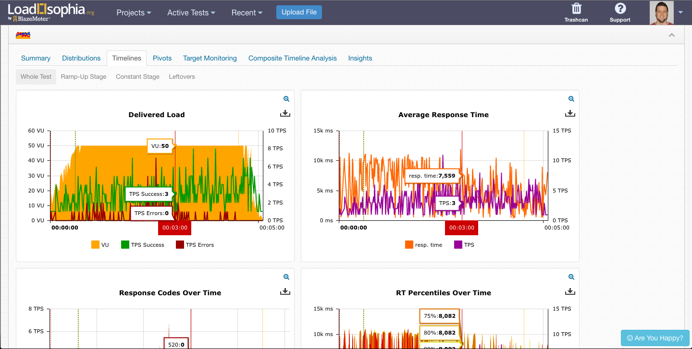
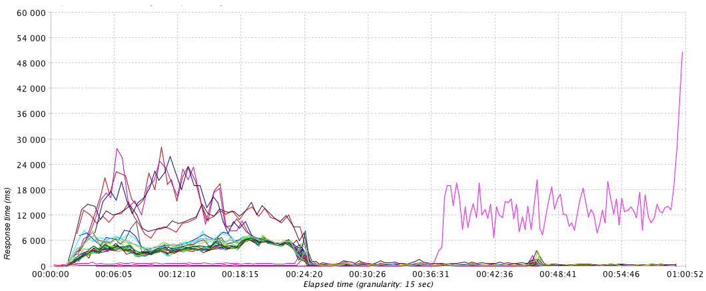

Finding performance bottlenecks with JMeter
Paul Heasley

Why load test your application?
Load testing is performed to determine a system's behavior under both normal and anticipated peak load conditions. It helps to identify the maximum operating capacity of an application as well as any bottlenecks and determine which element is causing degradation.
- Wikipedia
Our findings
- Login was a bottleneck
- Our ability to scale under heavy load was flawed
How to load test your application
- Model a users behaviour
- Simulate load
- Interpret results
- Take action
Identify a toolset
1. Modelling a users behaviour
(Use Chrome Dev Tools)
Setup JMeter test
2. Simulate load using AWS
github.com/PageUpPeopleOrg/aws-load-test
.
├── kill.sh // run this to shutdown the test on all servers
├── loadtest.properties // the configuration file, the only file you need to edit
├── loadtest.sh // the main script, run this from your local PC to kick off the test
├── server.sh // The remote server script, installs JMeter and runs the test
├── user.properties // JMeter configuration that's copied to all remotes
└── Vagrantfile // A convenient vagrant setup to run the script on windows
3. Interpret the results
Loadosophia.org
JMeter Graphs
4. Take action
Our login bottleneck
Before

After

Our scaling problem
Before

After